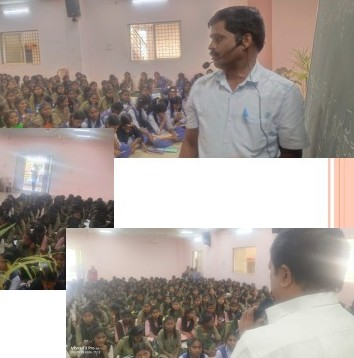
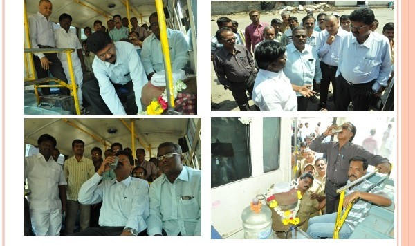

Education & Youth Mentorship
Conducting annual SSLC exam fear-reduction seminars, motivational coaching, memory techniques, and free distribution of study notebooks to high school students in Sandur, Kudligi, and Ballari.
Our Everyday Purpose & Duty
We uplift society through meaningful work in education, health, and the environment. We support children and youth through quality education and skill development, promote community well-being through health awareness and care, and protect nature through tree plantation, cleanliness, and water conservation drives.
Our operational philosophy
At Sanmarga Geleyara Balaga, mission is not a static paper statement—it is our weekend sweat, our volunteer presence in government school classrooms, our doctors examining rural seniors, and saplings planted with our own hands.
Working hand-in-hand with local communities, transport workers, police authorities, and educational officers, we bridge critical gaps with 100% voluntary transparency.

Our Action Areas
Structured initiatives tackling the most pressing challenges across Ballari district.
Conducting annual SSLC exam fear-reduction seminars, motivational coaching, memory techniques, and free distribution of study notebooks to high school students in Sandur, Kudligi, and Ballari.
Organizing multi-diagnostic medical check-ups and specialized free eye-care camps. Over 4,860 free eye beneficiaries and 3,000+ general check-ups supported with spectacles and essential medicines.
Planting over 2,510 native trees, providing cool drinking water to thousands of summer commuters inside KSRTC buses, and hosting air pollution control awareness campaigns with authorities.
Moments of Service
A snapshot of dedicated voluntary drives carried out across Ballari district.



Join hands with us
There is always room for another helping hand. Join our active volunteer network or support an initiative.